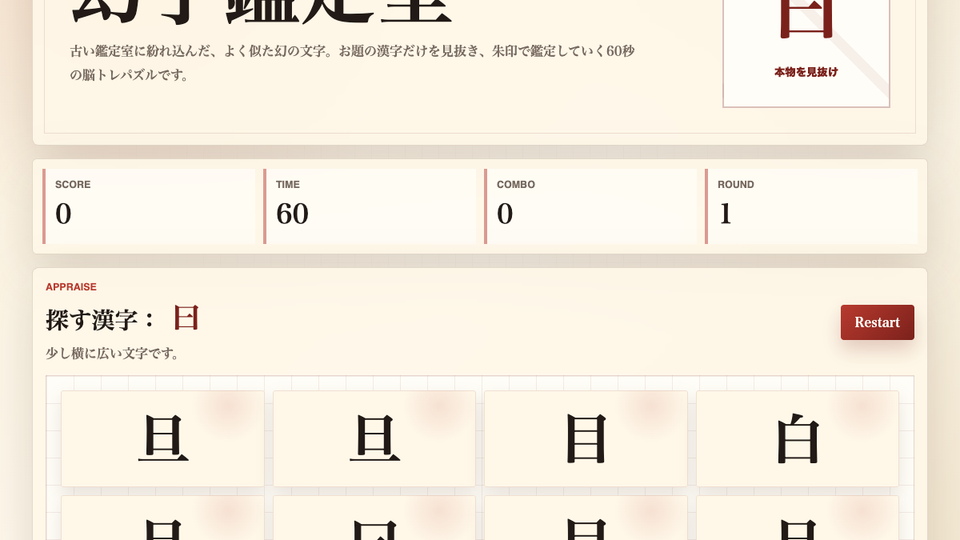

遊び方
- 画面上部の「探す漢字」を確認します。
- 盤面の中から、お題と完全に同じ漢字だけをクリックまたはタップします。
- 正解すると次の鑑定へ進み、連続正解でコンボが伸びます。
漢字パズル / 脳トレ / 無料ブラウザゲーム
幻字鑑定室は、似た漢字の中からお題と完全に同じ文字を見抜く無料ブラウザ脳トレゲームです。未と末、鳥と烏のような微妙な違いを60秒で鑑定し、コンボを伸ばして高得点を狙います。

お題の漢字を一度だけ見て探し始めるより、横棒の長さ、点の有無、払いの角度など、違いが出やすい場所を決めてから盤面を見ると安定します。
漢字パズル、無料 ブラウザゲーム 暇つぶし、短時間で遊べる ミニゲーム、インストール不要 ゲームを探している人向けの観察力ゲームです。日本語の文字をテーマにしているので、脳トレ感がありながら短く遊べます。
スマホで遊べる 無料ゲームとしてタップ操作に対応しています。PCではクリックとキーボード開始に対応しており、休み時間 暇つぶしゲームとしても遊びやすい設計です。
似ている漢字を並べるだけの単純な問題に見えて、焦るほど細部の見落としが増えます。自分の認識を疑いながら鑑定する緊張感が、短時間のリトライにつながります。
はい。無料ブラウザゲーム広場で、インストール不要で無料プレイできます。
漢字の読みを答えるゲームではなく、形の違いを見るゲームです。読み方を知らなくても遊べます。
はい。スマホではタップ操作で遊べます。PCではクリック操作に対応しています。
幻字鑑定室と近い無料ブラウザゲームを、遊び方や端末別の入口から探せます。